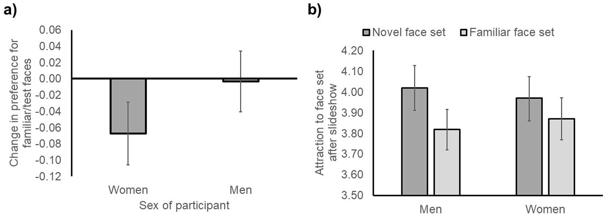
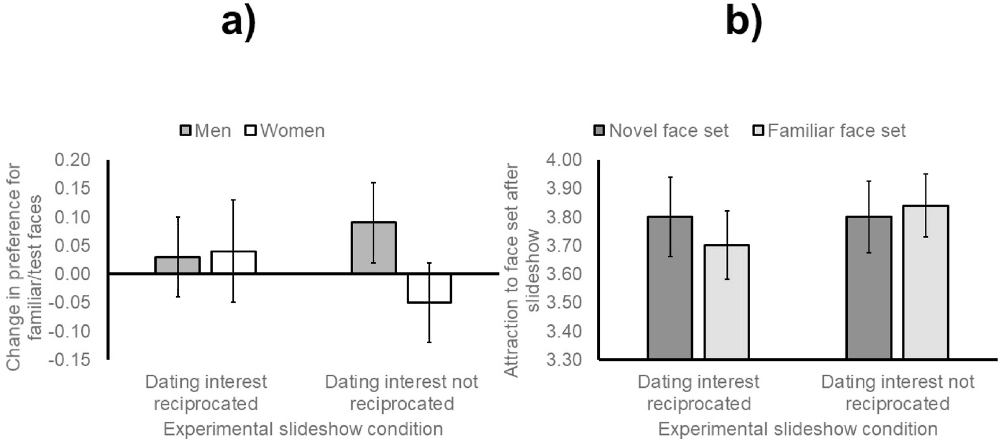

1 引言
1.1 对面孔的社会判断及其后果
- 效价（valence）和吸引力（attractiveness）是评价面孔的两个维度
- 面孔的吸引力判断是快速的，即使这种判断和手头的任务无关
- 熟悉产生喜欢（familiarity breeds liking）
- 熟悉性和典型性（大众均值的代表性）是吸引力的部分基础
- 交友网站上，兴趣、价值观、年龄和教育程度等方面的相似性会促进重复接触
- 本研究关注：在线上交友背景下，熟悉性（familiarity）和新异性（novelty）对吸引力判断的影响
1.2 线上交友平台引发的评估心态
- 现在人们花费大量时间在线上，接触大量不熟悉的社会同伴
- 浏览个人资料是线上交友的重要环节
- 短时间内大量浏览、缺乏真实社会情景情况下低成本联系
- 塑造与面对面不同的趋近-回避行为（approach-avoidance behaviour）
- 搜索和视觉得到的特征比面对面交流才能得到的特征（幽默感、沟通风格等）更突出
- 肤浅的评估心态（assessment mindset）
- 潜在交友对象和大量替代对象进行比较
- 在第一次“互配”后仍寻找“更合适”的对象
1.3 评估心态和选择在交友中的作用
- 评估心态在线上交友的各个环节发挥作用
- 是否回应、早期约会评估伴侣、承诺还是继续、是否停止使用
- 选择过载假说（The Choice Overload Hypothesis）
- 基于肤浅或少量线索的大数据集会触发节俭的选择策略，做出更保守的决策
- 在购物、线下快速交友中均得到验证
- 交友决策中表示拒绝、购物决策中不购买
1.4 本实验
- 激活评估心态，并判断这种心态如何影响对熟悉和新异面孔吸引力的判断
- 吸引力是面孔知觉的重要的维度，也是我们进行互动的原因
- 情景变化，吸引力也会变化
- 证明约会过程不同阶段所涉及的较低层次知觉机制，即吸引力判断机制
- 大量新异的替代伴侣，他人吸引力增强还是减弱
- 柯立芝效应（Coolidge Effect）
- 在动物的雄性（以及少数情况指雌性）对于新出现的异性有较高的交配意愿，即使它已与周遭旧有的异性有交配经验
- 相较于男性，女性认为熟悉面孔相对于新异面孔更有吸引力
- 熟悉性是研究线上交友和选择行为时的一个重要维度
- 本研究探究：多个项目间进行选择的条件是否降低了对熟悉面孔和熟悉但相对于不熟悉/新异面孔的吸引力评级
- 线上交友情景下，被试是否会降低对熟悉性别偏好面孔的评价
- 检验可选择性是否破坏承诺，同时检验性别差异
2 实验1
2.1 方法
2.1.1 被试
- 188名异性恋个体；93男；年龄：24.69 ± 8.52
- 预注册90%效应下计算得到需要每个条件下54个被试，但因为一些规则删除了部分被试，最后除男性控制组人数外，其他组均达到80%效应要求
2.1.2 面孔刺激
- 面孔材料来自Face Research Lab London Set,全彩标准条件下拍摄的白人面孔
- 样本的吸引力由950名异性恋女性和515名异性恋男性对性别偏好面孔打分得到，1-7
- 选取吸引力在中点（mid-point，3.5）附近的分数的照片
- 性别（男、女）× 条件（熟悉、新异）
- 两次评分，第一次5男5女面孔，第二次额外加入5男5女面孔作为新异面孔
- 四组面孔之间吸引力没有显著差异
- 同时对两性评分，为了区分效应是浪漫吸引产生的
- 两次评分，第一次5男5女面孔，第二次额外加入5男5女面孔作为新异面孔
2.1.3 预实验
- 预实验目的是选择建构用于激活心理状态的场景的材料
- 招募两批被试，第一批评价潜在约会伴侣，第二批评价潜在选择的甜点
- 潜在约会伴侣照片找其他志愿者自行上传可用于线上交友简介的照片；甜点照片在公开图库中选择（要求被试想象选一个带回家，与照片的不同主要是交友这种社会信息）
- 被试在观看照片后评价
- 效价：愉快（1分）-不愉快（9分）；
- 唤醒度：兴奋（1分）-平静（9分）；
- 支配感：感到受控制（1分）-感到能够控制（9分）
- 吸引力：1-7
- 最后男性、女性、甜点各选出15张吸引力在统计上相似（其他三个维度也无显著差异）的照片作为实验背景建构材料
- 确保实验控制材料的吸引力，只保留约会选择的影响
2.1.4 实验流程
- 先评价5男5女照片的吸引力
- 分配至实验组或控制组
- 实验组：先想象正在浏览交友网站，并选择是否愿意约会，播放幻灯片照片，每张照片后都想象一会场景
- 控制组：先想象正在浏览甜品网站，并选择是否愿意带回家，播放幻灯片照片，每张照片后都想象一会场景
- 再次评分，为了防止猜到目的，额外加入10张面孔
2.1.5 数据分析策略
- 分别计算前后测男女性别面孔得分均值，共四个分
- 出现两次的面孔，后测减去前测得到变化，大于0熟悉性偏好，小于0新异性偏好
- 三个模型
- 模型一：实验条件（约会、甜品）× 被试性别（男、女）× 面孔性别（被试内：男、女），因变量：吸引力评分变化
- 模型二：实验条件（约会、甜品）× 被试性别（男、女）× 面孔性别（被试内：男、女）× 实验阶段（被试内：前测、后测），因变量：吸引力评分
- 模型三：实验条件（约会、甜品）× 被试性别（男、女）× 面孔性别（被试内：男、女）× 面孔组别（被试内：熟悉、新异），因变量：后测吸引力评分
2.2 结果
- 模型一：无显著差异
- 模型二：
- 面孔性别 × 被试性别交互效应显著
- 男性对异性面孔吸引力评分大于同性
- 女性无差异
- 实验阶段主效应显著，配对样本t检验证明熟悉面孔吸引力评分更低
- 面孔性别 × 被试性别交互效应显著
- 模型三：
- 结果和模型二类似，面孔组别主效应显著
- 新异面孔吸引力得分大于熟悉面孔
3 实验2
- 越熟悉越没吸引力，是不是在单身群体中效应更明显
- 相同时间内更少的选择是不是不会触发这种效果
3.1 方法
3.1.1 被试
- 439单身，231男，208女
3.1.2 实验流程
- 和实验1大体类似
- 幻灯片分四种情况（实验条件 × 选择条件）
- 交友图片-高选择：和实验1相同，15张人脸图片
- 交友图片-低选择：相同时间内5张人脸图片
- 甜点图片-高选择：15张甜点图片
- 甜点图片-低选择：相同时间内5张甜点图片
- 不同组吸引力进行了匹配
3.1.3 数据分析策略
- 在研究1模型一和模型三的基础上添加了选择条件
- 实验阶段（前测、后测）差异不是本研究重点
3.2 结果

- 实验条件（约会、甜品）× 被试性别（男、女）× 面孔性别（被试内：男、女）× 选择条件（被试内：高、低），因变量：吸引力评分变化
- 被试性别、面孔性别主效应显著
- 女性对熟悉面孔打分降低幅度显著大于男性（见 图 1 a）
- 实验条件（约会、甜品）× 被试性别（男、女）× 面孔性别（被试内：男、女）× 面孔组别（被试内：熟悉、新异）× 选择条件（被试内：高、低），因变量：后测吸引力评分
- 面孔性别主效应显著
- 面孔组别 × 被试性别交互效应显著
- 对男性而言，新异面孔得分大于熟悉面孔的幅度显著大于女性（见 图 1 b），两种性别性下新异面孔均显著大于熟悉面孔
- 实验条件 × 被试性别交互效应显著
- 以后测吸引力评分为因变量，分性别进行单因素方差分析
- 男性：约会条件后的评分显著大于甜品条件后的得分
- 女性：甜品条件后的评分大于约会条件后的得分，但不显著
4 实验3
- 对新异面孔的高评价在男女中均出现，在面孔和甜点条件下也都出现
- 可能非浪漫关系的选择也会引发相似的评估心态
4.1 方法
4.1.1 被试
- 130异性恋，64男性
- 无额外筛选标准
4.1.2 实验流程和分析策略
- 和实验1一致，只是把幻灯片播放变成了休息
- 分析方法和实验2一致，只是去除了实验条件（约会、甜品）这个变量
4.2 结果
- 被试性别（男、女）× 面孔性别（被试内：男、女），因变量：吸引力评分变化
- 面孔性别主效应显著，女性面孔得到更积极的评价
- 被试性别（男、女）× 面孔性别（被试内：男、女）× 面孔组别（被试内：熟悉、新异），因变量：后测吸引力评分
- 被试性别 × 面孔组别交互效应显著，男性给新异面孔评价显著高于熟悉面孔，但在女性中无显著差异
- 只分析非恋爱中被试
- 面孔性别 × 面孔组别交互效应显著，男性面孔中，新异面孔评价显著高于熟悉面孔，但在女性面孔中无差异
5 实验4
- 第3个实验证明对新异面孔的喜好在单身群体中没有性别差异
- 交换实验2中新异面孔和熟悉面孔（在实验4中，实验2中的新异面孔出现2次，熟悉面孔出现1次）
- 统一使用约会图片，同时想象这些对象都对自己感兴趣或都不感兴趣
5.1 方法
5.1.1 被试
- 352单身异性恋，181男，171女
- 根据实验2的标准（回答时间过长），部分情况下排除了76人
5.1.2 实验流程
- 材料和实验2一致，只是转换了新异和熟悉面孔
- 使用指导语操纵，被试全部得到回应和全部没得到回应
- 完成积极和消极情绪量表，观察是否进入状态
- 观察积极和消极的差值，结果显著
- 其他流程不变
5.1.3 数据分析策略
- 和实验2一致，除了实验条件变为是否得到回应
5.2 结果

- 实验条件（回应、不回应）× 被试性别（男、女）× 面孔性别（被试内：男、女），因变量：吸引力评分变化
- 全样本时，无显著（单尾被试性别 × 实验条件显著）
- 排除时间过长的被试后，被试性别 × 实验条件显著
- 回应时，男性和女性均对熟悉面孔评价没有差异
- 不回应时，男性对熟悉面孔吸引力评价显著提高；女性无显著差异；两性差异显著（见 图 2 a）
- 实验条件（回应、不回应）× 被试性别（男、女）× 面孔性别（被试内：男、女）× 面孔组别（被试内：熟悉、新异）× 选择条件（被试内：高、低），因变量：后测吸引力评分
- 面孔性别 × 被试性别 × 面孔组别显著
- 面孔组别 × 实验条件显著，排除超时被试后仅这个显著
- 回应时，新异面孔比熟悉面孔更有吸引力
- 不回应时，两者不存在显著差异（见 图 2 b）
6 讨论
6.1 结果总结
- 实验1
- 选择情境没有使异性熟悉面孔的评分相对于基线下降
- 熟悉面孔在幻灯片后的评分低于幻灯片前
- 幻灯片后，被试更偏向新面孔而不是熟悉面孔
- 实验2
- 与单身男性相比，单身女性在幻灯片后对熟悉面孔的吸引力评价更低
- 选项数量和幻灯片内容均未影响面孔偏好
- 男性和女性都更喜欢新面孔，但男性的新异偏好更强
- 男性浏览约会照片后，对后续面孔的总体评价高于浏览甜点后；女性没有出现相同模式
- 实验3
- 取消用于激活评估心态的幻灯片后，单身男性与单身女性的面孔偏好没有表现出性别差异
- 实验2中的性别差异可能由选择或评估情境诱发
- 实验4
- 排除离群值后，男性在第二次看到熟悉面孔时，比女性表现出更高的吸引力评价，与实验2的方向一致
- 这一性别差异只出现在未得到回应的条件中
- 得到回应时，男性与女性之间没有差异
- 回应条件下，男性和女性都更喜欢新面孔而不是熟悉面孔
- 排除离群值后，男性在第二次看到熟悉面孔时，比女性表现出更高的吸引力评价，与实验2的方向一致
6.2 理论解释
- 前人研究认为：线上交友平台上规模较大的潜在约会对象群体可能诱发一种“评估心态”，并在约会过程的不同阶段削弱个体的承诺意愿
- 表现：
- 在不同情境下，人们第二次看到同一张面孔时，对其吸引力的评价可能发生变化
- 在实验性地激活选择情境后，人们对熟悉面孔与新异面孔的相对吸引力评价可能发生变化
- 理论：
- 吸引力是面孔知觉和社会互动中的一个关键维度
- 人们对吸引力的判断具有一定的自动性和强制性
- 吸引力判断对于塑造我们接近或回避特定个体的动机具有重要作用
- 表现：
- 本研究发现：
- 这种现象的性别差异不受选择集数量本身的调节，受回应数量调节
- 单身女性对新异面孔相对于熟悉面孔表现出更强的偏好
- 未来可考察：
- 自评吸引力
- 目标吸引力
- 社会规范
- 人生阶段
- 本研究还控制了吸引力的基线、网络环境
- 新异面孔比熟悉面孔更有吸引力，男性中强于女性
- 匹配成功效应都会增强
- 可能是因为积极的网络经历对承诺有负面影响
- 本研究不能断言线上交友选择会降低男性对同一个熟悉对象的吸引力评价
- 本研究的设计可以区分
- 熟悉面孔是不是吸引力下降（时间变化）
- 新异面孔是不是有优势（熟悉面孔相对于其他人的吸引力是否发生变化）
6.3 局限性和实际应用
- 原假设未被支持，效应可能是一种普遍的选择机制
- 实验4部分恢复了约会情境的解释力，部分解决特异性问题（在两性面孔上都出现效果，不能确定是浪漫关系）
- 测量的是初始知觉，而不是实际约会行为
- 真实平台中的效应可能更强，但这只是有待检验的推测
7 总结
- 人们对新异面孔评分更高
- 在控制情境的情况下，女性对熟悉面孔评分更低，男性无差异
参考文献
Sculley, J. R., Ritchie, K. L., & Watkins, C. D. (2021). Having options alters the attractiveness of familiar versus novel faces: Sex differences and similarities. Computers in Human Behavior, 124, 106937. https://doi.org/https://doi.org/10.1016/j.chb.2021.106937